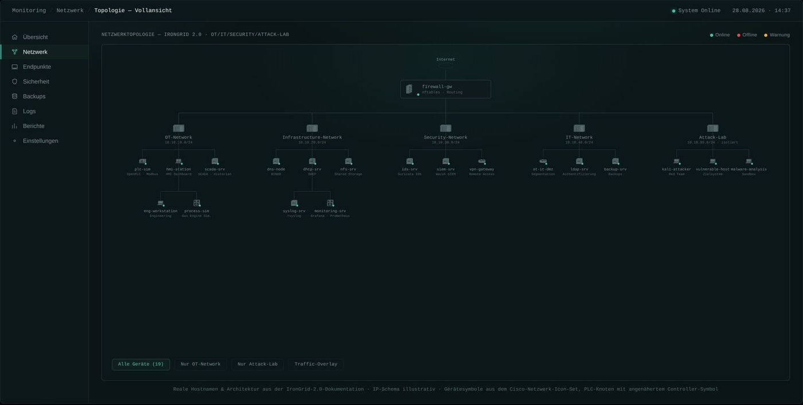
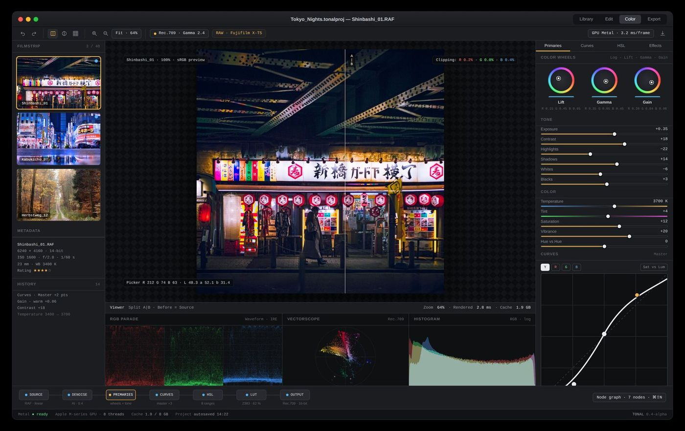
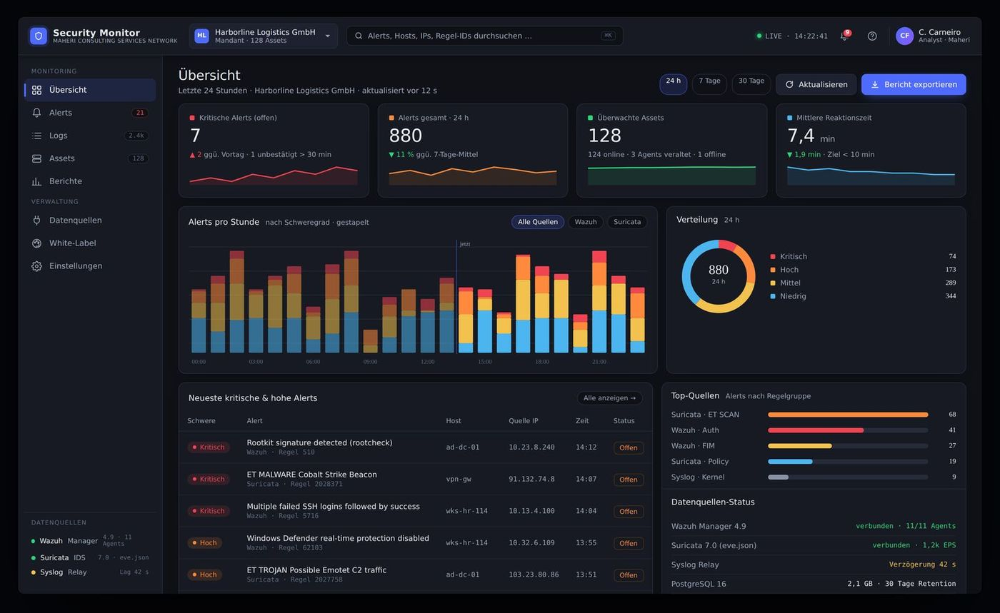

Interfaces, die unter Druck lesbar bleiben.
Ich entwerfe Oberflächen für Leitstände, Editoren und Monitoring, und baue sie selbst. Kommunikationsdesign-Diplom, dann Webentwicklung: beides in einer Hand.

Vier Werkzeuge für den Desktop, ein Konzept fürs Telefon.
IronGrid 2.0
Ein Dashboard, das 19 reale Hosts in fünf Zonen in Sekunden lesbar macht.
Eigenes Security-Lab für eine simulierte Gaskraftwerk-Anlage: Topologie, Alert-Feed, Endpunkte, mobile Alarmierung. Ein Red-Team-Test aus dem Attack-Lab wird als PENTEST markiert, nicht als Alarm.

RELAIS
SPS lernen wie ein Spiel, ohne die Realität zu verbiegen.
Kontaktplan-Editor, AWL-Konsole mit Röntgenblick in die CPU, HMI-Prozessbild und Lektionen. Wer RELAIS beherrscht, findet sich in professioneller Steuerungssoftware wieder.

TONAL
Grading wie im Schnittraum, für ein einzelnes Bild.
Ein Prototyp, der rechnet statt illustriert: Waveform, Vektorskop, CIE-Farbwolke und CMYK-Auszüge entstehen aus den echten Pixeln. Looks als Node-Graph. Die Oberfläche für ein Produkt, das in Swift und Metal entsteht.

Security Monitor
Ein Code, jede Marke: Theme-Tokens zur Laufzeit.
Multi-Mandanten-Dashboard für Maheri Consulting (USA): Alerts, Detailansicht, Maßnahmen, Theme pro Kunde. Sechs Wochen, Angular und Symfony. Gezeigt wird ein Nachbau mit simulierten Daten; der Kundencode bleibt vertraulich.

DB Navigator Rescue
Wenn die Reise bricht, repariert die App sie.
Ein Konzept für die nächste Generation der Bahn-App: Reise beobachten, Folgen erklären, Alternativen finden, Fahrgastrechte vorbereiten. 21 Screens, fünf Zustände. Nicht im Auftrag der Deutschen Bahn.


Verstehen. In Code prototypen. Prüfen.
„Ein klickbarer Entwurf ist ehrlicher als ein Bild: Er zeigt, was das System kann und wo es scheitert.“
Verstehen, bevor ich zeichne
Welche Daten gibt es wirklich, wer schaut darauf, in welcher Situation? Für IronGrid habe ich ein OT-Labor gebaut, bevor die erste Karte entstand.
In Code prototypen
Statt statischer Mockups baue ich Oberflächen in HTML, CSS und SVG. Scopes rechnen, Symbole folgen Normen, Zustände ändern sich.
Prüfen und aufschreiben
Jede Case Study endet mit Entscheidungen, einer Iteration und dem, was noch fehlt. Die nächsten Fehler finde ich lieber selbst als der Nutzer.
Ein Beruf, zwei Hälften: Entwurf und Umsetzung.
Ich bin UX/Fullstack-Entwickler: Ich gestalte Oberflächen und baue sie selbst. Der Weg dorthin war zweistufig, erst Kommunikationsdesign (Diplom, Düsseldorf, Note 1,4) und Agenturjahre in Interface- und Webdesign, dann eine höhere Berufsausbildung in Webentwicklung, weil mir das Übergeben von Entwürfen nicht mehr reichte.
Zuletzt habe ich bei der TA Bildungszentrum GmbH als Fullstack-Entwickler mit PHP, Symfony und Twig gearbeitet. Ein eigenes OT/IT-Labor und ein Kundenprojekt im Security-Monitoring liefern die Fachtiefe für IronGrid, RELAIS und den Security Monitor.
- 2025 – 2026TA Bildungszentrum GmbH
Fullstack-Entwickler (Praktikum): PHP 8.4, Symfony, Twig · Website 4.0 · Mailing-Automation (Brevo, n8n, LLM) - 2022 – 2025Höhere Berufsausbildung Webentwicklung
DAW · EQF Level 5 · Java als Kernsprache - 2017 – heuteIntêrstate Magazine
Mitgründer & Editorial Director - 2016 – 2018Hesse Design GmbH
Designer, Düsseldorf / Shanghai: Web, Interfaces, Editorial - 2015 – 2019Freiberuflicher Designer
u. a. SMS Group, Willy Heckmann - 2011 – 2015Diplom Kommunikationsdesign
IN.D Düsseldorf · Note 1,4